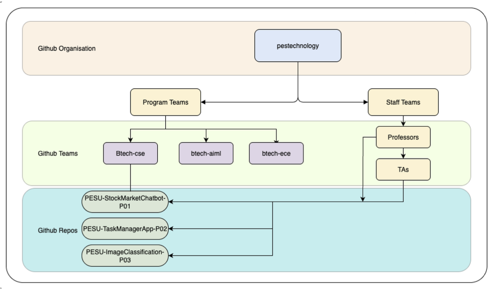

This comprehensive guide covers everything you need to know about using Campus Source, PES University's GitHub Enterprise platform. Whether you're a student working on course projects or faculty managing research repositories, this guide will help you get the most out of our collaborative development environment.
Getting Started
Account Setup
- Create GitHub Account: Sign up at github.com using your official
@pes.edu email address
- Join PES Organization: Accept the invitation to join the "pestechnology" organization
- Enable Two-Factor Authentication: Set up 2FA using an authenticator app (required for all users)
- Complete Profile: Add your full name and department information
Important: Two-Factor Authentication is mandatory for all Campus Source users. Use authenticator apps like Google Authenticator or Microsoft Authenticator, not SMS.
Repository Management
Repository Naming Convention
All repositories must follow the standardized naming format:
PESU-<ProjectName>-<ProjectId>
Example: PESU-StockMarketChatbot-P01
Repository Topics
Tag your repositories with relevant topics for better discoverability:
- Course Code: CSE101, ECE202, etc.
- Academic Year: AY2024-25
- Semester: semester-1, semester-2
- Project Type: capstone, lab-assignment, research
- Technology: python, javascript, machine-learning
Team Management

Team Structure
- Program Teams: btech-cse, mtech-ece, mba, etc.
- Staff Teams: professors, teaching-assistants
- Project Teams: Auto-created for each project
Access Control
Teams provide different access levels:
- Read: View code, clone repositories, create issues
- Write: Push changes, merge pull requests, manage issues
- Admin: Full repository management, team administration
Project Workflow
Development Process
- Branch Protection: Main branch is protected and requires pull requests
- Feature Development: Create feature branches for new work
- Code Review: All changes must be reviewed before merging
- Continuous Integration: Automated testing and security scanning
Pull Request Guidelines
- Provide clear, descriptive titles and descriptions
- Reference related issues using keywords (closes #123)
- Ensure all CI checks pass before requesting review
- Address reviewer feedback promptly
Security Best Practices
Credential Management
- Never commit API keys, passwords, or sensitive data
- Use GitHub Secrets for CI/CD pipeline credentials
- Enable Dependabot alerts for vulnerable dependencies
- Regular security scanning is automatically enabled
Access Management
- Use personal access tokens instead of passwords
- Regularly review and rotate access tokens
- Report suspicious activity immediately
- Follow principle of least privilege
Common Tasks
Creating a New Project Repository
- Contact your professor or TA to initiate project creation
- Repository will be created with proper naming and topics
- Team members will be automatically added
- Branch protection and security features will be configured
Joining an Existing Project
- Accept the email invitation to join the repository
- Clone the repository to your local machine
- Set up your development environment
- Create a feature branch for your first contribution
Submitting Code Changes
- Create a new branch:
git checkout -b feature/your-feature-name
- Make your changes and commit:
git commit -m "Add feature description"
- Push to your branch:
git push origin feature/your-feature-name
- Create a pull request through the GitHub web interface
- Request review from team members or TAs